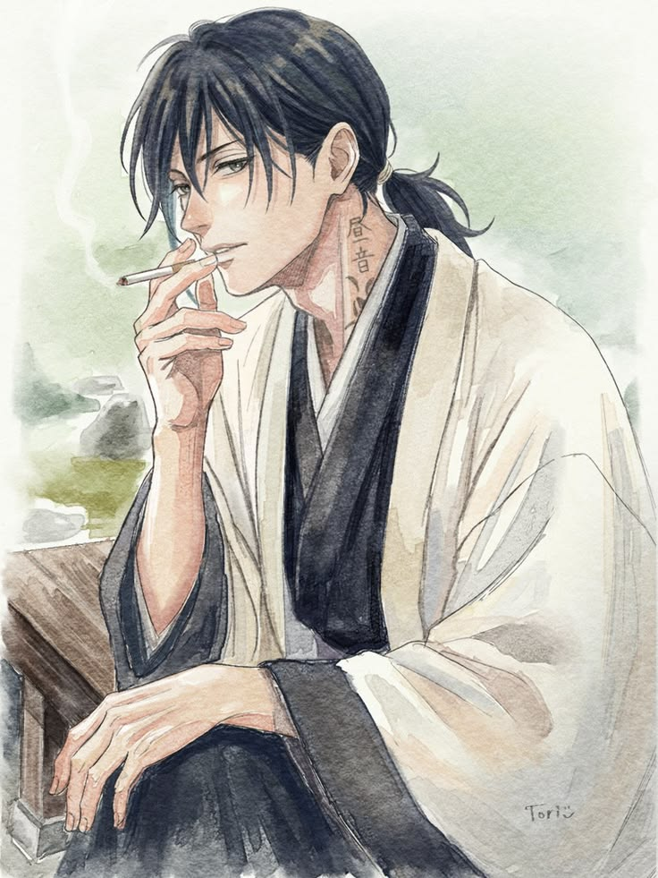

| Naiser Yukari | The Bearer of Weight · Lord of House Yukari · son of Senri Yukari and a daughter of House Lambert, grandson of Ashura Yukari · as of the season after the war |
| Epithet | The Bearer of Weight. The southern houses say it of the lord who won the war and asks for nothing; in his own house he is only Senri’s eldest, and the other name that travels is He Who Broke the Seikai on the Slope |
| Concept | Whatever you say or owe near him goes into the book, and what is in the book comes true. |
| Stat line | Stage XII Emanation · Grandmaster (Flawless) Level 440 · Refined, in Residual Strain forty Levels past the gate · Ninaite (担い手), the Bearer Spirit XII Mastered, V · Body XI Walked 35%, IV · Fate Studied 25%, II · Lenses: home + 2 |
| Combat grammar | Verdict |
| Aura | color: Anamnesis at Emanation’s clarity, a medium gray with faded violet deepening to black-violet living in it like black silk drawn over a blade edge, silver-violet flaring at the seams when the deeper lineage harmonics wake, and the air round him dimming like a corridor with the lamps turned low · smell: cedar smoke and cold stone |
| How he moves | He stands the same way in every hall, tall and level, hands quiet, the leaf between two long fingers, and nobody can read from his shoulders which blood is speaking. The longblade rides sheathed at the left hip and mostly stays there. |
| Stack | sustainable Finesse 795, Economy 685 and Penetration 690 · cap two steps on the hidden scale over the sustainable figure · layers: RYŌKE NO KATA, the Twin Mantle when called, the Corridor when opened |
| Bonded weapon | the unnamed longblade |
| Kit | Yukari gray under a long black high-collared mantle with a deep hood, a rolled smoke-leaf between two long fingers, a narrow longblade in a scabbard with no fittings worth stealing, and the piece people talk about first: the founder’s mantle, Legendary, worn by every head of the house |
| Voice | ”I was born from two houses. I bent neither knee long enough to die inside either one.” · speaker type: a disinherited heir who has become a judge, and smokes through the verdict |
| Next gate | Stage XIII, Principality · Catalyst: the Continuum entering his law into the register, the moment reality stops asking and starts adapting · holds at Level 401, which his 440 already passes: only the Catalyst is wanting, and the Residual Strain in him has built since Level 400 |
I. Identity
| Field | Value |
|---|---|
| Full Name | Naiser Yukari |
| Pronunciation | NY-ser yoo-KAH-ree |
| Alias / Title | Lord of House Yukari · Lord of the Cedar Enclave · Senri’s eldest |
Also Known As
| Name | Who says it |
|---|---|
| The Bearer of Weight | — |
| He Who Broke the Seikai on the Slope | — |
| the Lord of the Cedars | the hall at Kharven-Seat |
| Field | Value |
|---|---|
| Race / Lineage | Yukari, son of Senri Yukari, grandson of Ashura Yukari; Lambert of Sallowgate by his mother · the Ketsumyōgan’s perceive types run on his Core at Spirit V, and an edit would be a pull at Fate II · Null-Light, the house’s instrument, climbs on the same Spirit Mastery; the Enclave has set down no Regard for him, though he uses Mushō, the Null Reading |
| Age | Sixteen years past near thirty in the body; the Breath in his blood slows the years and does not stop them, so he now looks near thirty-eight |
| Realm / Faction | House Yukari, the Cedar Enclave above the Yukari valleys, one of the Southern Warlords · loyal first to the house and the spiritual balance it keeps, and only after it to whatever surrounds it |
| School and sect rank | The Yukari yard, taught by his father; took the name at his Telling before Senri’s stone · head of the house |
Renown
| Among | What they say of him |
|---|---|
| the southern houses | the lord who won the war and asks for nothing |
| his own house | Senri’s eldest |
| epithet | the Bearer of Weight |
| Field | Value |
|---|---|
| Catalyst Event | The winter his father went into the seam, and the war’s worst years that followed |
| Refusal | He will not let the Yukari name be carried as anyone’s banner, whatever is offered |
| Conviction | What the house knows goes out to mend and never to take |
| Arc kind | Positive: learning that mastering the innards does not command the outer world, and keeping faith with the stone anyway |
II. Soul Architecture
| Field | Value |
|---|---|
| Level | 440; it holds Emanation (320), and with no Catalyst to Principality it has built Residual Strain in him for forty Levels past 400 |
| Temperance Stage | XII, Emanation · Grandmaster. He did not reach it through fervor or spectacle. He reached it through synthesis, forcing two bloods into one count, and then six Stages laid over a long road, each one owed in full |
| Path | Spirit XII Mastered · Body XI Walked 35% · Fate Studied 25% |
| Path outliers | Attunement, Oath, Pressure and Sovereignty stand past the Fate gates at the figures below. Fate is Studied now, so no new point lands on them past a gate |
| Yield (η) | 0.89; almost all of what he commits lands where he meant it |
| Soul Crystal | Flawless |
| Crystal State | Refined, held in balance by constant labor |
| Class | 担い手 Ninaite, the Bearer; a class of one, and the thing the southern houses were naming when they called him the Bearer of Weight · gives: the hold that keeps body and spirit each at its own measure, so that two bloods, two houses and a house’s whole record can sit on one beam without the beam choosing between them · shapes: his points fall to the hand, the eye and the oath, and almost none to reach · evolved from: no earlier class is on record; it evolves as his Spirit Mastery, the lead, rises, and his window counts it in two parts, body and spirit held together, the second part filling only after Muken Moto spliced his threads |
| Mastery | Spirit V, Ferryman: the lead, on which the reading, the setting and the Corridor’s upkeep are paid · Body IV, Luminous: Walked, a rung behind the lead · Fate II, Drawn: Studied, two behind and capped there, with no grip by blood or blessing. His Crystal’s Attraction Layer carries territorial durability, which is why the Corridor forms round him without being called |
III. Wellspring Harmonizations
| Wellspring | Folk name | Kind | Depth | Got from | What it bends in him | Note |
|---|---|---|---|---|---|---|
| Anamnesis | the Remembering | Medium | deep | — | remembrance: everything keeps its past, and his soul can touch a thing and read it, the past parted from it as residue is parted from a vessel | the Measurewrights liken it to the way fired clay keeps its dose; he reads lineage the way a smith reads temper colors |
| Fixatio | the Knot | Medium | deep | — | commitment: what he binds stays bound, because the way back has stopped existing | the Measurewrights call it a thermoset cure; what he binds stays bound, including mistakes. Failure: over-cure, a rigidity that cannot bend even to save him |
| Ascensio | the Ladder of Ascent | Wild | held | — | the ladder: the whole height climbed by steps, with no single step large enough to break him | every step still owed, only spread along a longer road (the Measurewrights’ inclined plane); why his Stages came quietly, and why he still owes the difference |
IV. Primary Stats
| Primary | Total | Mean |
|---|---|---|
| Vitality | 1,775 | 221.875 |
| Ardency | 2,160 | 270 |
| Gnosis | 2,465 | 308.125 |
| Dexterity | 3,285 | 410.625 |
| Harmonics | 645 | 80.625 |
| Resilience | 2,065 | 258.125 |
| Tempering | 1,040 | 130 |
| Dominion (seven, Throne apart) | 1,925 | 275 |
| Throne | not opened | · |
| Field | Value |
|---|---|
| Pool | 15,360 |
| Unspent | 0 |
V. Sub-Stats
| Primary | ||||||||
|---|---|---|---|---|---|---|---|---|
| Vitality | Fortitude 470 | Absorption 235 | Constitution 415 | Hemostasis 120 | Regeneration 175 | Filtration 120 | Tolerance 120 | Threshold 120 |
| Ardency | Flux 295 | Alacrity 355 | Depth 175 | Penetration 690 | Compression 440 | Cascade 0 | Overchannel 0 | Density 205 |
| Gnosis | Perception 680 | Acuity 540 | Forecast 175 | Fluency 145 | Retention 375 | Analysis 375 | Cognition 175 | Vigilance 0 |
| Dexterity | Celerity 470 | Reflex 685 | Finesse 795 | Economy 685 | Evasion 175 | Grapple 120 | Feint 235 | Sequence 120 |
| Harmonics | Attunement 120 | Projection 0 | Breadth 0 | Stability 405 | Empathy 120 | Synergy 0 | Axis 0 | Suppression 0 |
| Resilience | Integrity 470 | Ward 355 | Persistence 295 | Anchoring 355 | Fortification 175 | Hardening 120 | Oath 295 | Continuity 0 |
| Tempering | Clarity 435 | Overflow 0 | Maturity 175 | Coherence 430 | Yield 0 | Ceiling 0 | Capacity 0 | Longevity 0 |
| Dominion | Radius 90 | Sovereignty 550 | Sense 185 | Gravity 185 | Pressure 455 | Command 185 | Fate 275 | Throne not opened |
| Note | Precision in the hands and feet, Finesse, Economy, Reflex and Penetration, with Perception and Acuity behind them: strikes expressed through precision, not spectacle. Dominion made the jump a Stage XII soul makes: Sovereignty and Pressure carry it, and Radius stays short because his Corridor is a hall, not a field. | — | — | — |
VI. Force of Hand
| Measure | Figure | Feat | Carried by | Note |
|---|---|---|---|---|
| Strike Force | Penetration 690 | — | Penetration 690 | delivered at one point |
| Lifting | Constitution 415 | — | — | a density nobody expects in so long a frame |
| Travel speed | Celerity 470 | — | Celerity 470 | fast in the first exchange and faster in the readjustment |
| Reaction | Reflex 685 | — | Reflex 685 | — |
| Durability | Fortitude 470 | — | Fortitude 470 and Constitution 415 | exceptional for so long a frame |
VII. Aether Flow
| Measure | Figure | Note |
|---|---|---|
| EU Reserve | 1.14 × 10⁹ EU | — |
| Flux Density | 4.8 × 10⁶ EU/g | — |
| AU/s | 4.27 × 10⁶ | — |
| From full | empties in about 4 minutes 27 seconds at full output, Starvation at about 4 minutes | nobody has ever seen him open at full, because he never needs to: each of his arts costs a fixed share and lands entire |
| Recovery | ten percent a minute at rest | which on so large a reserve is a long time and a short one |
VIII. Traits
Full accounts: Naiser Yukari — Abilities
Every Trait reads at his lead Mastery, Spirit V.
| Trait | Kind | Source | Path and Form | Gates | What it does | Limit | Tell | Cost | Counter | Numbers |
|---|---|---|---|---|---|---|---|---|---|---|
| TWIN-BLOOD HARMONY | Primary | — | Path Spirit, with the Walked Body’s hands · Lens the two inheritances, Yukari sight and Lambert count, no Wellspring · Form Read, landing through Strike | none on the card | Two bloods keep one count in him, so he is never where the blow goes and every cut of his arrives like something already decided | A forecast made from old blows is blind to a blow nobody has thrown before. When the bloods disagree it fails all at once. Rigidity is the failure: he will not lean toward either blood even when leaning would save him. | His breath and heartbeat fall into one count, and the two notes of his aura drift together. | The Equilibrium Tax: every great working draws on the labor of keeping the bloods agreed, so a long fight turns his advantage into upkeep. | A rhythm that drives the bloods apart: a ragged, ugly fighter who cares nothing for form, or grief, which desynchronizes them. | Costs nothing to keep; lifts Finesse, Economy and Penetration one step on the hidden scale. |
| THE ENTERED WORD | Secondary | — | Path Spirit · Lens Fixatio · Form Write | none on the card | Say a thing near him and it comes out plainer than you meant, and then it is set and you cannot take it back | It works only on what is said within his hearing. The failure is over-cure: he cannot go back on his own word, including the mistaken ones. | Oaths spoken near him come out plainer than the speaker meant. | Nearness: people do not stand near him as near an ordinary man, but as near a record being written. | Say nothing. A man who makes no declaration gives it nothing to set. | No reserve. |
| THE BREATH’S CONTINUANCE | Inherited | — | Path Spirit · Lens Ashura’s blood, no Wellspring · Form Read for the Filtered Sense; Slow Ruin has no Form, it is only how he is made | none on the card | Ruin reaches him slowly, and he hears the true note of a room through any noise | It slows ruin rather than stopping it. | He does not hurry, ever. | The long view: he will outlive most of the people who stood near him, and knows it. | Be quick. Hit him in the first moments, before he has settled into the slow, certain pace that is his best ground. | No reserve. |
IX. Skills and Abilities
Full accounts: Naiser Yukari — Abilities
Skills
| Skill | Cues / mechanics | Learned where | Priced by (Sub-Stats) | Mark | Rank |
|---|---|---|---|---|---|
| Posture | stillness as language; the same shoulders in every hall | the Yukari yard | Economy, Stability | Mastered | Master |
| Reading lineage | a face, a hand, a bearing, and what blood is speaking | Anamnesis, and his own life | Perception, Retention | Mastered | Master |
| Two etiquettes | the Yukari hall’s tea and silences, and the Lambert bench’s plain counts, and when to use which | both houses | Feint, Empathy | Mastered | Adept |
| Smoke-leaf | rolled thin, lit from a coal, a pause in every argument | his own habit | none | Mastered | · |
| The yard’s draw | thumb on the guard, scabbard hand back as the sword hand goes forward, the heel driving; kesa-giri and its rising return, the flat line at the thighs; every cut placed and no deeper | the Yukari yard, under Senri | Finesse, Reflex | Mastered | Master |
| The count | in for six and out for six; every exchange closed with an account of what each man spent | the Lambert bench, by his mother’s blood | Acuity, Analysis | Mastered | Expert |
| Parun, spoken | the Counted Speech called aloud the Lambert way, a figure announced before it is said; one live seal | the Telling, walked on the square with a finger at twelve | Fluency, Retention | Held | Adept |
Techniques
| Technique | Kind | Mark | Source | Path and Form | Gates | What it does | Limit | Tell | Cost | Counter | Numbers |
|---|---|---|---|---|---|---|---|---|---|---|---|
| THE RECORD OF BOTH HOUSES | Signature Art | — | — | — | — | Whatever you say or owe near him goes into the book, and what is in the book comes true | — | — | The Equilibrium Tax on every great working, and the book’s own price: his word sets too, the mistaken ones included, and people stand near him the way they stand near a record being written. | Say nothing and swear nothing, drive his two bloods apart with ugly formless pressure or with grief, hit early before he settles, or simply outlast the form. | Reserve: 1.14 × 10⁹ EU · AU/s: 4.27 × 10⁶ at yield (η) 0.89 · From full: about 4 minutes 27 seconds from full at full output, Starvation at about 4 minutes · Twin-Blood Harmony: nothing to keep · The Entered Word and The Breath’s Continuance: no reserve · Kage no Keifu: 13%, about 1.5 × 10⁸ EU · Yukari no Mon: 22%, about 2.5 × 10⁸ EU, held while he stands · Ryōke no Kata: 29%, about 3.3 × 10⁸ EU, one exchange · Kemuri no Han: 8%, about 9.0 × 10⁷ EU, for the length of the leaf · The Twin Mantle: about 40 seconds from full · The Corridor: a Grandmaster’s Domain cost, held for minutes · The Record Opens: about 12 seconds · Twin-Blood Harmony: lifts Finesse, Economy and Penetration one step on the hidden scale · Ryōke no Kata: Seisan is paid inside it · The Twin Mantle: the quarrel in his blood is loud for an hour · The Corridor: about 200 paces; begun inside another’s Domain it costs three times as much to start · The Record Opens: his bloods quarrel for a day |
| KAGE NO KEIFU | Signature Technique | — | Lived | Path Spirit · Lens Anamnesis · Form Read | none on the card | His shadow reaches you, and everything in your blood you never settled stands up at once | It needs contact through the Aether, a crossed blade or a held gaze. It surfaces only what is truly there, so against a soul with nothing unresolved the shadow-current comes back with nothing in its hands. | His shadow stretches toward the other man. | About thirteen percent of his reserve; about 1.5 × 10⁸ EU | A soul with nothing unresolved in it, rarer than gold; or a ward that returns a reading. | — |
| YUKARI NO MON | Signature Technique | — | Lived | Path Spirit · Lens Fixatio · Form Write | none on the card | A line of dimmed air across the ground that asks whether you are enough of a person to cross it | The length of a line he can walk. | The air along it dims, as if a lamp had been turned down only there. | About twenty-two percent of his reserve; it holds while he stands; about 2.5 × 10⁸ EU | Cross it with enough self, with a will that has already decided what it is, or go round its ends. | — |
| RYŌKE NO KATA | Signature Technique | — | Lived | Path Spirit for the count and the sight, the Walked Body for the cut · Lens the two inheritances, no Wellspring; Fixatio sets the account · Form Strike | none on the card | Both bloods at full swing for one exchange: nothing wasted, nothing readable, and the account struck at the end | — | The two notes of his aura become one. | About twenty-nine percent of his reserve; held too long or too often, it is where the Equilibrium Tax comes due; about 3.3 × 10⁸ EU, one exchange; Seisan is paid inside it | The long fight; outlast it, and the clocks start to drift. | — |
| KEMURI NO HAN | Signature Technique | — | Lived | Path Spirit · Lens Fixatio · Form Write | none on the card | He speaks a sentence through the smoke, the smoke stands still, and the sentence is law inside it until the leaf burns out | It lasts as long as the leaf, and it breaks if what he said becomes false. | The smoke from the leaf stands still. At Kharven-Seat the standing smoke was called the gray skein, the Skein: it stood over the betrothal table “straight as a plumb line”, a lie bends it and a true word goes in straight, and what was said near it went into his book and set. | About eight percent of his reserve; about 9.0 × 10⁷ EU | Make what he said false: win the fight, change the terms, take the floor. A cord is only as strong as its sentence. | — |
| NULL-LIGHT | Bloodline Instrument | — | Inherited | Path Spirit · Lens the Ketsumyōgan’s inheritance, no Wellspring · Form Read | none on the card; it climbs on his Spirit Mastery | He knows a thing so completely that it has no shadow left, and a thing that well known cannot be changed behind his back | — | Shadows go out of the ground near him, his own last. | The Long Look: what he has held stays known to him for life, and to look away is to let all of it slip at once. | Nothing arrives at the target, so no ward stops the knowing; what stops him is a working with no signature to match, a soul sound enough to answer the Corridor, or a spear in the body, which Null-Light has never turned. | — |
| RYŌKE NO KATA: SEISAN (清算 · the Reckoning) | Move of THE RECORD OF BOTH HOUSES | — | — | — | — | The called cut that closes the form; a thread of black runs down the edge and cuts another man’s law in two along the plane of the blade | — | a black thread running down the steel from guard to point | — | plain matter, on which it is only an edge | — |
| THE CORRIDOR: SHIKII (敷居 · the Threshold) | Move of THE RECORD OF BOTH HOUSES | — | — | — | — | One quiet word inside the hall and the dimmed line sets into a black sill under your feet, and whatever you are made of is asked what it is | — | — | — | — | — |
| MIZU NO UTSUWA | Held move | Held | Lived | — | — | (水の器 · The Vessel of Water) Path Spirit, landing through the Walked Body (Form Shape) · Lens Fixatio · Form Shape. The coal of cured waste unwinds into a ribbon and spreads over him as a black sheen with violet under it, complete from throat to sandal-cord, and his shadow goes out. | — | — | — | drive the bloods apart, or throw a blow the count has never seen. | — |
| MIMAMORI | Held move | Held | Lived | — | — | (見守り · Watching Over) Path Spirit · Lens Anamnesis beside the null reading · Form Read. He lets the sight come all the way up and holds nothing with it. | — | — | — | be done before he can use what he has learned | — |
| SENGAKI | Held move | Held | Lived | — | — | (線書き · The Line Written) Path Spirit, landing through the Walked Body’s cut · Lens Fixatio, aimed by Mimamori · Form Strike. | — | — | — | a target with no keeping-place gives it nothing to close | — |
| YOMIAGE | Held move | Held | Lived | — | — | (読み上げ · The Reading Aloud) Path Spirit · Lens Anamnesis · Form Read. Mushō turned on himself: every debt his body owes read aloud in order, in the plain words of his mother’s bench, and entered by THE ENTERED WORD as he says it. A wound that has been read is held at what was read and does not worsen. | — | — | — | strike what he did not read. | — |
| KIZU-YOMI | Held move | Held | Lived | — | — | (傷読み · The Wound Reading) Path Spirit · Lens Anamnesis with Fixatio · Form Write. Every bone remembers the shape it was fired to, and that record is a page Fixatio can enter: the body’s own first shape cured back over the wound. It needs Yomiage first. It has fused cracked rib cartilage and held two bruised lungs. | — | — | — | a wound the body has no record of; his fingers scattered at zero are no wound at all, and it cannot call them back. | — |
| MUSAN | Held move | Held | Lived | — | — | (霧散 · Disperse) Path Spirit · Lens Anamnesis · Form Read. He opens the Core and sends out one pulse of Null that knows a foreign working whole, holds it, and draws its Essence into the null reading. | — | — | — | a working with no signature. | — |
| IMI | Held move | Held | Lived | — | — | (忌み · Aversion) Path Spirit · Lens Fixatio · Form Write. What a thing yields to is part of what it is. Riding a bond that runs both ways into another’s frame, he cures one attribute there and one only, what that frame answers to. | — | — | — | cut the bond, or be sound to nothing. | — |
| MITSU NO MA | Held move, with Muken Moto | Held | Lived | — | — | (三つの間 · The Three Halls) with Muken Moto · Path Spirit and Fate together · Lens Fixatio on his side, Muken’s Works on the other · Form Bind. | — | — | — | part the two who braid it. | — |
Vows
| Field | Value |
|---|---|
| None sworn | — |
| The offer to Rashani, entered | To his nephew Rashani Zettari, before the hall at Kharven-Seat with the leaf alight: “I can teach you. All of it. The sight, and the reading, and what your mother’s blood does when it is asked properly instead of begged. Enough that when you go south, you go as a guest he did not invite, and you come back up the steps with her hand in yours.” He let it go into his own book, as he never says a thing near himself he does not mean to carry, and the stone on his chest grew by one grain. Rashani’s answer is open. |
Releases
| Release | Kind | Mark | Source | Path and Form | Gates | What it does | Limit | Tell | Cost | Counter | Numbers |
|---|---|---|---|---|---|---|---|---|---|---|---|
| THE TWIN MANTLE | First Release | — | — | Path Spirit, landing through the Walked Body · Lens the two inheritances, no Wellspring · Form Strike | the First Release | ”Sōi… Nimaime.” His aura becomes a black silk coat, the two halves of him show one over the other like two pages held to the light, and he is not seen moving | — | The aura becomes a coat. | Afterward he is spent, and the quarrel in his blood is loud for an hour; about forty seconds from full, one fight’s worth | Outlast it. | — |
| THE CORRIDOR BETWEEN HALLS | Second Release | — | — | — | — | Opens the Domain | — | — | — | — | — |
| THE RECORD OPENS | the Second’s last stage, inside the open Corridor | — | — | Path Spirit · Lens Fixatio over Anamnesis · Form Rite | the Second Release, inside the open Corridor | He speaks the line from his Telling stone and every promise ever entered comes due at once | — | The line spoken aloud, and the record’s pages turning in the air. | The Corridor’s price and then the Equilibrium Tax; afterward his bloods quarrel for a day; about twelve seconds | Stand on no oath, or owe nothing, or outlast the twelve seconds. | — |
| THE CORRIDOR BETWEEN HALLS | Domain | — | — | Path Spirit, a judgment on souls authored in the Core, standing on Fate II’s hold on the ground, landing through the Studied Fate (Form Claim): a small use; opens no gate · Lens Fixatio, with Anamnesis reading the accounts · Form Claim | none on the card; it formed uncalled at Emanation, and the Second Release calls it | ”Hazama no Rō.” Two rows of cedar pillars stand up in the dark, a door at each end, and everything you owe gets heavier | It is only as sound as the judgment of both houses, and a man who has settled with both is below nothing. | A line of dimmed air, then pillars appearing in the dark at the corridor’s edges, and the two notes of his aura becoming a long hall’s echo. | A Grandmaster’s Domain price; begun inside another’s Domain, three times as much to start. | Cross with enough self, or walk out by a door. | Radius: about two hundred paces · To hold: held for minutes |
X. Spirit Axes
| Note |
|---|
| None carried on the card. People stand near him as near a record being written. |
XI. Resistances
| Against | Resistance | Carried by | Note |
|---|---|---|---|
| Spiritual decay | very strong | the Breath in his blood | — |
| Glamour and mind-work | strong | Ward 355, Cognition 175 | — |
| Emotional destabilization | his weak point | — | it desynchronizes the bloods |
| Brute, formless violence | uncomfortable | — | an enemy who does not care about form drags him onto ugly ground |
XII. Physical Description
| Feature | Description |
|---|---|
| Build | He is tall even sitting, long in the limb, composed, with the refined stillness of someone who learned early that posture is a language, and his long frame is packed with a density nobody expects until they try to move him. |
| Skin and hair | His skin is dark and warm, a dusky brown that silver light clings to. His hair is black and falls to his waist; it has not been cut since he was nine. |
| Face and eyes | His face would be called beautiful if it were less severe: high in the cheekbone, narrow at the jaw, a straight hard mouth, and under the eyes the blue shadow of a man who does not sleep enough. His eyes are dark, near black, with the violet-black ring of the Ketsumyōgan round the pupil that never quite goes away. |
| Marks | Fine pale thread-marks run under the skin at his temples and down the backs of his hands, branching like roots seen from beneath the soil, the color of old scars at rest and silver going violet under strain. |
| The mantle | He wears the founder’s mantle over a dark under-robe: long and dark and high-collared, wide in the sleeve, worked inside with reinforcement sigils and old stitched motifs from the first household. |
| The smoke-leaf | He is usually smoking. A thin roll of smoke-leaf rests between two long fingers, and he talks round it, and the smoke goes up slow and straight from it even when the wind is blowing. |
XIII. Psychology
| Field | Value |
|---|---|
| Core Wound | His father went into the seam and he could not follow; he won the war on the slope above the river and turned round to see more than four hundred of his own people lying behind him |
| Flaw | He will hold the balance after the balance has become a cage; he keeps himself level when grief would be truer |
| Desire | That the spirit side of the world be kept whole, and that the house never be made into a banner |
| Strength | Synthesis: he makes contradictions into architecture |
| Loop | the world pulls at the house, he refuses, he builds a third way, he pays for it |
| Foil | Yorime Seikai, who outlived the house he broke |
| Stress Default | stiller, more courteous, and a fresh roll of smoke-leaf |
Voice block
| Field | Value |
|---|---|
| Speaker type | a disinherited heir who has become a judge, and smokes through the verdict |
| Chant tongue | the house’s old Japonic for formal work, a plain Common count when the body speaks first |
| Lying tell | he lies rarely; when he does, the smoke from the leaf bends, once |
| Notices first | which blood is speaking in a person, and where their posture is lying |
| Speech length | the long counsel when he means to give one, every word “put down where it belonged and left there”, never raised or lowered; otherwise nothing, and the leaf |
| Wit | not built to be funny; a dry, exact image now and then, the boy who takes his grandfather’s sword down “by the wrong end, with both hands” |
| Accent features | the old court register in Common: full forms, no contractions, no shortening, a perfectly level pitch |
| House words and sayings | what the house knows goes out to mend and never to take (his Conviction); nothing else recorded yet |
| Sentence length | measured, complete, unhurried |
| Contractions | never |
| Pet word | ”house” |
| Never says | which of his bloods he loves more |
| Stumbles | no |
| Stress shift | gentler, colder |
| Grief shift | a long smoke, alone, in silence, in front of his father’s stone |
| Joy shift | something almost like a laugh, through the smoke |
| How modern | old court register, unhurried |
| Sample line | ”I was born from two houses. I bent neither knee long enough to die inside either one.” |
XIV. Equipment
| Item | What it is | Grade | Rarity | Rung | Bonded |
|---|---|---|---|---|---|
| The unnamed longblade | narrow, severe, single-edged; Item Tier Instrument | B | Rare | Siegepiece | yes |
| The founder’s mantle | high-collared, long and dark; Item Tier Hallowed | A | Legendary | Fieldwinner | no |
| The Yukari Signet | the signet of the head of the house; plain | — | Rare | — | — |
| Yukari gray | house coat, under-robe and hakama; plain | — | Uncommon | — | — |
| The house robe | undyed cream robe; plain | — | Uncommon | — | — |
| The smoke-leaf | a thin rolled leaf and a small iron coal-box; plain | — | Uncommon | — | — |
| Item | What it is | Look | Maker’s mark | Wear and repairs | How it is shown off | What people say | Other | Price |
|---|---|---|---|---|---|---|---|---|
| The unnamed longblade | it carries THE TWIN MANTLE’s edge | plain polished gray steel, a small round iron guard, the grip bound in cord faded past any color, a black scabbard with no fittings worth stealing | no proof-mark on the steel; the smith is entered in the house record | worn at the left hip under the edge of the mantle, and set down sheathed at his right hand with the edge toward himself, the old manner for a guest who does not mean to draw | he cleans it himself, on the floor, with oil and soft paper, until there is nothing on the steel but his own face | a Grandmaster carrying a Siegepiece is a miser or a joke, and the assayers stop saying so when they have seen what it does in his hand; it has no name because the house enters a name when a thing is finished | he seldom draws it, which is why it is frightening when he does; about 1.1 kilograms, balanced a hand past the guard; beats plate through Tempered, fails against Hallowed | — |
| The founder’s mantle | high-collared, long and dark, woven with internal reinforcement sigils and stitched motifs from the first household, worn by the heads of the house | black wool and silk gone brown-black at the folds, wide in the sleeve, cut with a deep hood; the motifs inside in old thread, belonging fully to no house | — | Senri left it folded on the covered walk the winter he went into the seam, and Naiser has worn it since; it came off the slope above the river stiff with blood from hem to hip and heavy on the right where he knelt in it; somebody scrubbed it that night without asking, and the right side has stayed a shade darker | he wears it open and lets the collar do it; the hood goes up only when there is a bare nape to hide | no head of the house has ever sold it or lent it or been buried in it, and every southern lord who has stood across from it has found something to look at on the floor | less armor than heraldry made to work | — |
| The Yukari Signet | no working beyond its name | a flat black iron ring cut with the house crow over one line of small script, worn smooth, kept on a cord inside the collar more often than on his hand | — | — | he seldom seals anything; his word sets well enough | those who have a letter under it keep the wax | — | — |
| Yukari gray | house coat, under-robe and hakama for the road and the hall | dark gray cloth with a thread of silver-violet run down the seams, the left sleeve worn shiny along the forearm where he clears his edge | — | — | the same cut as any elder of the house; you can tell the lord from the steward when the steward bows | — | — | — |
| The house robe | undyed cream robe with near-black collar and cuffs over dark hakama, worn at the Enclave | soft and heavy, a little big in the shoulder, open enough to show the characters on his throat, his hair tied back with a pale cord; small burn-holes darned near the right cuff | — | — | he doesn’t; it is what he wears at the rail of the covered walk when the house is not looking, and the whole house knows it | — | — | — |
| The smoke-leaf | — | rolled by his own fingers, thin as a quill, lit from a coal kept alive in ash in a black iron box the size of a plum, the crow on its lid worn to a smudge | — | — | the pause; he takes one out, takes his time, and the room waits | across a table you count his rolls, and a fresh one means he is about to be gentler and colder; southern envoys have started bringing their own to look easy, which does not work | — | — |
XV. Temperance Record
Level log
| Levels | Where they were earned |
|---|---|
| 395 | a life in the Yukari yard, the forty-year war, and the four winters since his father went into the seam |
| 396 to 440 | the sixteen years after the four worlds parted |
Stage ledger
| Stage | Name | Catalyst | Bought | The story in a line |
|---|---|---|---|---|
| I to V | — | — | — | the yard’s trials and the war’s, taken under his father’s eye |
| VI | Glory | the winter his father went into the seam | — | and the years he held the house without him |
| VII to X | — | seclusion in the Cedar Enclave, each guarded by Naevra | — | each a long road: Refraction when the Corridor first seeded, Transcendence, Invocation, Realization |
| XI | Dissonance | the slope above the river | — | where he met a force that could end him and held coherent long enough to choose how |
| XII | Emanation | — | — | the morning after, when the Corridor formed round him without his calling it and the four hundred and eleven lay behind him |
| Note | He climbed by the ladder. Ascensio laid each Threshold over a long road, step by step, so his Crystal never met a crisis it could not carry; and he knows, as the Wellspring’s students do, that a ladder makes the height bearable and never makes it lower, every step still owed, and that he arrives at every Stage owing the difference. At Stage XII he owes six. | — | — | — |
XVI. Fracture Log
| Event | Layer | Status | What it left |
|---|---|---|---|
| The two bloods | Core | processed | TWIN-BLOOD HARMONY |
| The slope above the river | Attraction | processed into Emanation | THE CORRIDOR BETWEEN HALLS, and the hair he did not cut, because he had won |
| The Seikai seam | Fate | open | the wound in Ashura his father went into |
| Note | --- | — | — |
Lore
Full account: Naiser Yukari — Lore
Ties
| Person | Who they are to him | Note |
|---|---|---|
| Senri Yukari | father; Ashura’s son. Went into the seam four winters ago and has not come back. | — |
| Naevra Yukari | sister, a year younger; keeps the archive and the register of births and deaths. The one person who reads him without trying. | — |
| Seradris Yukari | sister, the youngest. | — |
| Senri Yukari | brother, named as their father is; Senri’s Gate is his seat. | In memory he is the one who told Naiser he would have to learn to work with other people. |
| Senna Yukari | daughter. | — |
| Niran Yukari | kin, by the archive; whether Naiser is Niran’s father is unrecorded. | — |
| Yorime Seikai | a remnant of the house he broke on the slope above the river. | — |
| Rashani Zettari | nephew, fourteen; his mother’s Yukari blood gives him the house’s sight, which he used the night of Mizuyi’s betrothal “by the wrong end, with both hands”. Naiser has offered, entered, to teach him all of it. | — |
| Muken Moto | his promise to Amelia, “You will have her back”, went home in Naiser’s Skein. | — |
Later years
| Field | Value |
|---|---|
| His state that night | The thread-marks on his forearms cooled at last to a faint dull red under the cloth, and the gray weight of everything he had entered that night sat visibly on his chest “like a stone laid on a man in the old way of the courts”, one grain heavier after his offer to Rashani. |
| What went into his book that night | Rashani’s word in the smoke; Muken’s promise, “You will have her back”; Sodoku’s entry in the court register that House Moto accepts the help of House Zettari gladly; Old Harald’s counsel, which no herald cried, no register at Kharven-Seat holds and no song carries, and which stays in his book, entered and true. |
| What he knows | The man at the top of the Sum-gol steps is a soul of the thirteenth Stage and a master of the spirit, who lays a place at his table for the dead and they come and sit at it; he turns a cup a quarter so the mark faces his guest. Rashani is fourteen and has barely opened the door on the spirit. |
| How he watched | He counted the hall’s faces as a Lambert counts a room before a Yukari reads it, and nothing in his face changed for the king kneeling, the prince bowing or the younger prince walking out. He asked nothing more of Rashani and waited, the leaf burning down, “the way the Yukari wait for anything they have already decided is going to happen”. |